Interaction1
UMLInteraction
Models
::
Steering
::
Interaction1
Description
none
Diagrams

Sheering
Participants
Web
Steering
axios
API
Messages
fetch data (Web→Steering)
get (Steering→axios)
request (axios→API)
clearcing (API→API)
callback (axios→Steering)
response (API→axios)
info data (Steering→Steering)
show data (Steering→Web)
Add new (Web→Steering)
validattion (Steering→Steering)
post (Steering→axios)
request (axios→API)
create (API→API)
msg (Steering→Web)
callback (axios→Steering)
response (API→axios)
edit (Web→Steering)
validation (Steering→Steering)
put (Steering→axios)
request (axios→API)
find Id (API→API)
update (API→API)
msg (Steering→Web)
callback (axios→Steering)
response (API→axios)
disable (Web→Steering)
put (Steering→axios)
request (axios→API)
find Id (API→API)
update (API→API)
callback (axios→Steering)
response (API→axios)
msg (Steering→Web)
searching (Web→Steering)
get (Steering→axios)
request (axios→API)
find object (API→API)
show data (Steering→Web)
callback (axios→Steering)
response (API→axios)
Properties
Name
Value
name
Interaction1
stereotype
null
visibility
public
isReentrant
true
Owned Elements
Sheering